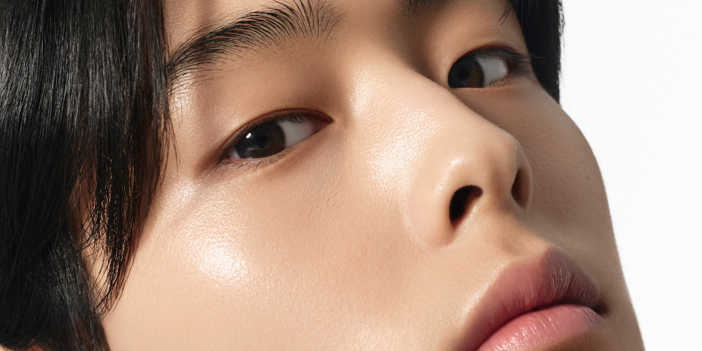

남성용 최고의 얼굴용 자외선 차단제: 원스텝, 무광택

남성을 위한 최고의 얼굴용 자외선 차단제는 매일 아침 실제로 바르는 것입니다. 그리고 닥터지 그린 드래곤 선 플러스 SPF50+ PA++++ 그 한 단계를 쉽게 만들어줍니다. 매일 자외선 노출이 증가함에도 불구하고 대부분의 남성은 여전히 얼굴용 자외선 차단제를 사용하지 않습니다. 그린 마일드 업 선 플러스 는 100% 미네랄, 광범위한 스펙트럼 SPF 50+ 아연을 기반으로 제작되었으며, 끈적임 없음, 그리고 그것 과하게 건조하지 않고 윤기를 조절해줍니다. 민감한 피부에도 순한 것으로 임상적으로 입증되었습니다. 닥터지는 서울 피부과 전문의 안건영 원장이 만든 클리닉 태생입니다. 수염이 있든 없든 매일 아침 마지막으로 바르십시오.
01.
매일 자외선 차단이 중요한 이유
출퇴근길, 점심시간, 주말 등 매일 자외선 노출이 발생하며 그 양은 점점 늘어납니다. WHO는 분류한다. 1군 발암물질인 자외선 [2], 그리고 눈에 보이는 피부 노화의 약 80%는 자외선이 원인입니다 [3].
그러나 대부분의 남성은 얼굴용 자외선 차단제를 건너뛰고 18.1%만이 정기적으로 착용 [1]. 여성과의 격차가 크다. 동일한 미국 조사에서 여성의 42.6%가 얼굴용 자외선 차단제를 정기적으로 사용했으며, 남성의 57.3%는 얼굴에 전혀 사용하지 않았습니다. [1].
자외선 차단제를 사용했다가 포기하셨다면 아마도 면도 후의 느낌, 번들거림, 윤기, 따끔거림 등이 그 이유였을 것입니다. 질감을 고치면 습관이 따라옵니다. 자외선 차단제는 미용 단계라기보다는 외출하기 전에 챙기는 재킷과 같은 장비라고 생각하세요. 그것은 또한 노화를 늦추는 가장 간단한 습관이 있습니다.
또한 읽어보세요 매일 자외선 노출
02.
닥터지의 원스텝 남성용 페이스 선크림
닥터지 그린 드래곤 선 플러스 SPF50+ PA++++ 한 걸음이다. 100% 미네랄, 브로드 스펙트럼 SPF 50+ 아연 기반으로 가볍고 끈적임이 없으며, 과도한 건조 없이 윤기를 컨트롤해준다고 김희진 박사가 밝혔습니다. [4]. 그것은 임상적으로 입증된 경증, 민감한 피부에도 국내 No.1 자외선 차단제 브랜드**.
아연은 지성 피부에 적합한 이유입니다. 산화아연 때문입니다. 기름을 흡수하다 많은 화학 필터보다 모공을 막을 가능성이 적습니다. [5]. 마무리도 중요합니다. 짧은 베일이 몇 초 안에 섞입니다. 그리고 매끄러운 베이스를 남겨주세요 [4]. 닥터지는 미네랄 필터와 Ectoin D를 결합하여 피부 장벽을 지원하고, PA++++는 한국 UVA 등급 중 최고 등급입니다.
피부과 전문의 안건영 박사는 1998년 서울에 고운세상 클리닉을 오픈하고 2003년 브랜드를 론칭했다. 그의 선케어 원칙은 짧다. "진료소에서는 보호가 결코 선택 사항이 아닙니다.. 최선의 치료법도 보호 없이는 실패합니다."
 |
|
|---|---|
| 기준 | 그린 드래곤 선 플러스 SPF50+ PA++++ |
| 피부 고민 | 지성 피부나 민감한 피부를 포함하여 매일 UV에 노출됩니다. |
| 효능 | 유해한 자외선과 환경 손상으로부터 피부를 보호합니다. |
| 성분 | 아연과 엑토인 D가 함유된 100% 순수 미네랄 UV 필터. |
| 조직 | 끈적임 없이 가벼운 미네랄 텍스처. |
| 사용방법 | 매일 아침 마지막 단계로. |
| 입증된 결과 | 임상적으로 입증된 순함, 민감한 피부에도 사용 가능‡ |
또한 읽어보세요 미네랄 SPF
03.
얼굴에 자외선 차단제를 바르는 방법
매일 아침 마지막 단계에서 얼굴, 목, 귀에 넉넉하게 발라줍니다.. 턱수염은 머리카락 위가 아닌 피부 아래에 바르십시오. 그런 다음 특히 운동이나 수영 후에 라벨에 지시된 대로 다시 바르십시오.
이것이 전체 루틴이며 1분도 채 걸리지 않습니다.
- 언제: 매일 아침 마지막 단계에서 모이스처라이저 사용 후 [4].
- 어떻게: 넉넉하게 펴 바르고 손끝으로 고르게 펴 발라줍니다.
- 어디: 얼굴, 목, 귀, 귀 뒤. 턱수염: 빽빽한 부분을 나누어 피부에 바르고 광대뼈와 귀 윗부분도 잊지 마세요.
- 면도 후: 헹구고 가볍게 두드려 말린 후 마지막 단계로 자외선 차단제를 발라주세요.
- 빈도: 매일, 일년 내내 라벨의 지시에 따라 다시 바르십시오. 특히 수영이나 땀을 흘린 후에는 더욱 그렇습니다.
그린 마일드 업 선 플러스 닥터지의 프로그램을 종료하는 Protect 단계이기도 합니다. 준비, 진정, 보호 루틴.
04.
루틴 쇼핑하기
준비, 달래기, 보호: 의사의 세 가지 단계를 일상적인 순서로 진행합니다.
- 1단계. 준비 – 브라이트닝 필링젤: 주 1~2회.
- 2단계. 진정시키기 – R.E.D 블레미쉬 클리어 수딩 크림: 아침 저녁.
- 3단계. 보호 – 그린 드래곤 선 플러스 SPF50+ PA++++: 매일 아침.


05.
메모 및 출처
* 국내 No.1 스킨케어 브랜드: Worldpanel by Numerator(구 Kantar Korea), 패널 연구, 2020.03.23~2025.03.23, 한국 침투 기준.
** 올리브영 선케어 부문; 닥터지 브랜드 참조(NBB 브리핑, 2026년 7월).
‡ 그린 드래곤 선 플러스 SPF50+ PA++++, 민감성 피부 테스트 수행: 피부과, 비면포성, 민감성 피부, 저자극성, 눈 자극, 소아 및 피부과 절차 자극 테스트. 닥터지 임상 테스트 데이터, 파일.
[1] Holman과 동료들은 4,033명의 미국 성인을 대상으로 한 2013년 설문조사 데이터를 분석했습니다.
동료 검토 연구
- [1] Holman DM, Berkowitz Z, Guy GP Jr, Hawkins NA, Saraiya M, Watson M. 미국 성인의 얼굴 및 기타 노출된 피부에 대한 자외선 차단제 사용 패턴. 미국 피부과 학회지. 2015;73(1):83-92.e1. doi:10.1016/j.jaad.2015.02.1112